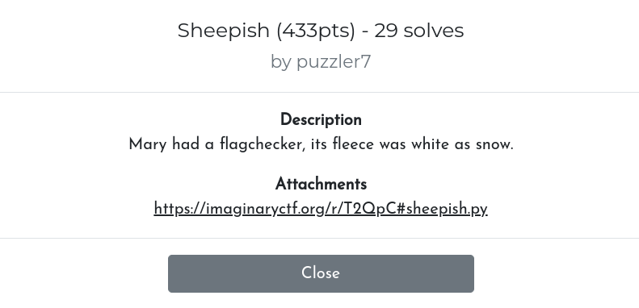

[ImaginaryCTF 2023 - reverse] Sheepish
ImaginaryCTF 2023 - Write-Up for the challenge Sheepish (Reverse)

TL;DR: Obfuscated Python code using lambda-calculus.
Description: Mary had a flagchecker, its fleece was white as snow.
Introduction
We are given a Python script, consisting in a single line of ~26k characters, with lots of lambda-functions. The full script is available here , see the beginning and the end of the file below.
print((((lambda _____________:((lambda ___:_____________(lambda _______:___(___)(_______)))(lambda ___:_____________(lambda _______:___(___)(_______)))))(lambda _____________:lambda ___________:lambda ______:(lambda ____:(lambda _:_(lambda __________:lambda _____:__________))(____))(___________)(lambda _:(lambda __________:lambda _____:__________))(lambda _:(lambda __________:lambda _____:__________(_____)(lambda __________:lambda _____:_____))((lambda __________:lambda _____:(lambda __________:lambda _____:__________(_____)(lambda __________:lambda _____:_____))((lambda __________:lambda _____:(lambda __________:__________(lambda _:(lambda __________:lambda _____:_____))(lambda __________:lambda _____:__________))
[...]
(lambda _____________:(lambda ________:(((lambda ____:lambda ___:(lambda __________:lambda _____:lambda ______________:______________(__________)(_____))(lambda __________:lambda _____:_____)((lambda __________:lambda _____:lambda ______________:______________(__________)(_____))(___)(____)))(_____________(________[1:]))(((lambda _____________:((lambda ___:_____________(lambda _______:___(___)(_______)))(lambda ___:_____________(lambda _______:___(___)(_______)))))(lambda _____________:(lambda __:(((lambda __:lambda __________:lambda _____:__________(__(__________)(_____)))(_____________(__-1))) if __ else (lambda __________:lambda _____:_____)))))(________[0]))) if len(________) else ((lambda __________:lambda _____:lambda ______________:______________(__________)(_____))(lambda __________:lambda _____:__________)(lambda __________:lambda _____:__________))))))(input(">>> ").encode())))("Well done!")("Try again..."))
In order to make the code more “readable”, we can replace the variable names (_, __, ___, …) with more readable names (x1, x2, x3, …)
A bit of culture
In theoretical science, it is known that lambda-calculus is Turing-complete. In other words, any program can be simulated with “lambda-terms”, namely, terms similar to lambda functions in Python.
For instance, the constant “true” can be simulated with the lambda-term λx.λy.x, and “false” with λx.λy.y. Integers can be represented as Church numerals.
The website https://lambdacalc.io/ provides a good summary of “common lambda-terms” used to simulate common operations in programming.
Deobfuscation, and solve
When looking closer at the code, we can observe such terms.
For instance, the constants true and false:
tru = (lambda x10:lambda x5:x10)
fls = (lambda x10:lambda x5:x5)
as well as the Church numerals and their arithmetic operations:
power = (lambda x10:lambda x5:x5(x10))
is0 = (lambda x10:x10(lambda x01:(fls))(tru))
succ = (lambda x2:lambda x10:lambda x5:x10(x2(x10)(x5)))
pred = (lambda x2:lambda x13:lambda x3:x2(lambda x12:lambda x9:x9(x12(x13)))(lambda x01:x3)(lambda x10:x10))
plus = (lambda x10:lambda x5:x10(succ)(x5))
minus = (lambda x10:lambda x5:x5(pred)(x10))
le = (lambda x10:lambda x5:is0(minus(x10)(x5)))
ge = (lambda x10:lambda x5:is0(minus(x5)(x10)))
mult = (lambda x10:lambda x5:lambda x14:x10(x5(x14)))
two = (lambda x10:lambda x5:x10(x10(x5)))
three = (lambda x10:lambda x5:x10(x10(x10(x5))))
four = (succ)(three)
The script is now way shorter, and a bit understandable (see here). We can recognize a sequence of arithmetic expressions, such as:
((plus)(mult((power)(two)(four))(succ(mult(two)(three))))((plus)(mult(two)(three))(succ(mult(two)(three)))))
The characters of the flag, maybe?
To solve the chall, I took the expressions, and I reimplemented the operators (full script here):
def plus(x):
return lambda y: x + y
def mult(x):
return lambda y: x * y
def power(x):
return lambda y: x ** y
def succ(x):
return x+1
zero = 0
two = 2
three = 3
four = 4
flag = ""
flag += chr(((plus)(mult((power)(two)(four))(succ(mult(two)(three))))((plus)(mult(two)(three))(succ(mult(two)(three))))))
flag += chr(((plus)(mult((power)(two)(four))(three))(mult((plus)(two)(three))(three))))
[...]
flag += chr(((plus)(mult((power)(two)(four))(mult(two)(three)))(three)))
flag += chr(((plus)(mult((power)(two)(four))(mult(two)(three)))((power)(three)(two))))
print(flag[::-1])
FLAG: ictf{d0_sh33p_b@@@?}
Upsolve
Even if identifying the arithmetic expressions was enough to solve the challenge, I was curious to understand the rest of the script.
In particular, the first lambda-term is very strange:
(lambda x13:((lambda x3:x13(lambda x7:x3(x3)(x7)))(lambda x3:x13(lambda x7:x3(x3)(x7)))))
x3 is applied to itself!
This term is a fixed-point combinator, more precisely a Z combinator: see theoretical details here. Roughly, it’s a term that can be used to simulate recursion.
Moreover, a long sequence of “chained” pairs appears at the beginning:
((lambda x4:lambda x3:pair(fls)(pair(x3)(x4)))((lambda x4:lambda x3:pair(fls)(pair(x3)(x4)))((lambda x4:lambda x3:pair(fls)(pair(x3)(x4)))((lambda x4:lambda x3:pair(fls)(pair(x3)(x4)))((lambda x4:lambda x3:pair(fls)(pair(x3)(x4))) ((lambda x4:lambda x3:pair(fls)(pair(x3)(x4))) ((lambda x4:lambda x3:pair(fls)(pair(x3)(x4)))((lambda x4:lambda x3:pair(fls)(pair(x3)(x4)))((lambda x4:lambda x3:pair(fls)(pair(x3)(x4))) ((lambda x4:lambda x3:pair(fls)(pair(x3)(x4)))((lambda x4:lambda x3:pair(fls)(pair(x3)(x4)))((lambda x4:lambda x3:pair(fls)(pair(x3)(x4)))((lambda x4:lambda x3:pair(fls)(pair(x3)(x4)))((lambda x4:lambda x3:pair(fls)(pair(x3)(x4)))((lambda x4:lambda x3:pair(fls)(pair(x3)(x4)))((lambda x4:lambda x3:pair(fls)(pair(x3)(x4)))((lambda x4:lambda x3:pair(fls)(pair(x3)(x4)))((lambda x4:lambda x3:pair(fls)(pair(x3)(x4)))((lambda x4:lambda x3:pair(fls)(pair(x3)(x4))) ((lambda x4:lambda x3:pair(fls)(pair(x3)(x4))) (pair(tru)(tru)) [...]) [...]) [...])
This term actually represents a linked list, whose elements are the susmentionned arithmetic expressions.
After further deobfuscation/understanding, we can conclude that the script performs successive comparisons on the chars of the input, in reverse order, with the chars in the linked list.
Conclusion
As a functional programming lover, I enjoyed a lot solving this chall. A big thanks to the author! I know it was possible to side-channel it, but it was funnier with lambda-calculus :)